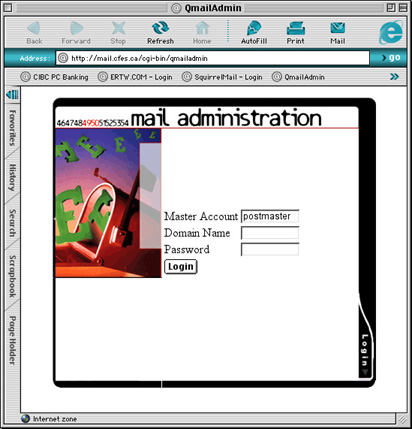

| >Main Admin Page >Email Administration Guide Index |
Point your favorite web browser at the QmailAdmin login page located at http://mail.cfes.ca/admin.

You should see the login screen for the QmailAdmin web page. You will be asked for three things. The Master Account, the Domain Name, and Password.
The Master Account is postmaster if you are administering the whole domain. This utility can also be used to change the password for an inidivual user by entering the appropriate username and password. This is how your users will change their password.
The Domain Name is the name of your domain minus any http or www prefix. For example, if the address of your domain is http://www.billybob.com, then your domain name is "billybob.com" without the quotes. The domain name for http://www.my.long.domain.name.net would be "my.long.domain.name.net" and so on.
The Password for the domain will be given by the system administrator initially. Note that this password can be changed by the domain administrator by simply changing the password of the postmaster account one you have logged in.
After you have entered your master account, domain name and password, click the Login button.
| >Main Admin Page >Email Administration Guide Index |